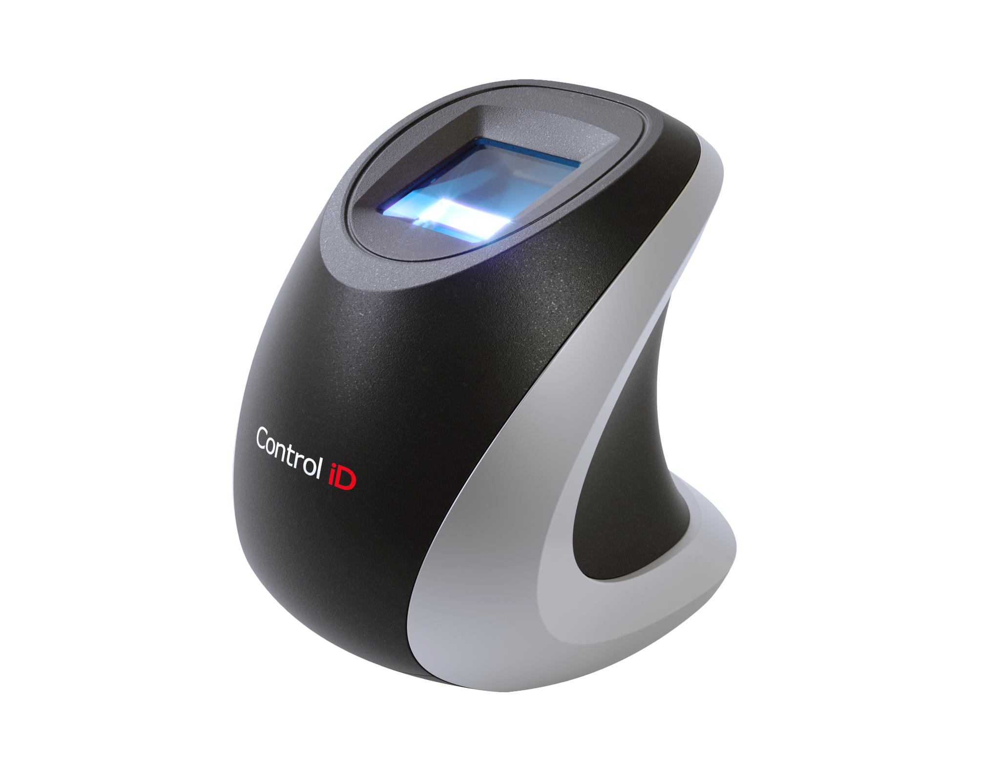

Introdução
O Leitor Biométrico iDBio, desenvolvido pela Control iD, permite capturar digitais com alta qualidade e, em sua versão Pro, possibilita também identificação e validação biométrica de forma rápida e segura

Este documento serve de refência para o usuário que deseja integar o seu software ao leitor biométrico iDBio.
Especificações Técnicas
| Features | iDBio |
|---|---|
| Área do scanner | 21 x 19 mm |
| Resolução da imagem | 500 DPI |
| Formato da imagem | 256 níveis de cinza |
| Interface USB | Comunicação de alta velocidade |
| Sinalizador sonoro | Buzzer para melhor usabilidade |
| Cabo USB integrado | Comprimento de 1,5m |
| Rápida Identifição* | Mais de 1000 usuários em menos de 1s |
| Confiabilidade* | Algoritmo biométrico de alto desempenho |
| Dimensões | 58 x 67 x 58 mm (L x A x P) |
| Peso do equipamento | 130g |
| Alimentação | 5V (fornecido via USB) |
| Consumo Total | 2,5 W |
* Disponível somente na versão PRO
Condições de armazenamento e funcionamento
Para garantir o bom funcionamento e a durabilidade do iDBio recomenda-se que este seja instalado em ambiente protegido contra exposição solar direta, chuva e outros fenômenos climáticos. Além disso, as condições de funcionamento e armazenamento descritas abaixo devem ser respeitadas.
Condições de funcionamento:
- Temperatura ambiente entre 0 ºC e 50 ºC;
- Umidade relativa do ar entre 10% e 80%;
- Altitude inferior a 3.000 m;
Condições de armazenamento:
- Temperatura entre 0 ºC e 50 ºC;
- Umidade relativa do ar entre 10% e 80%;
- Altitude inferior a 10.000 m;